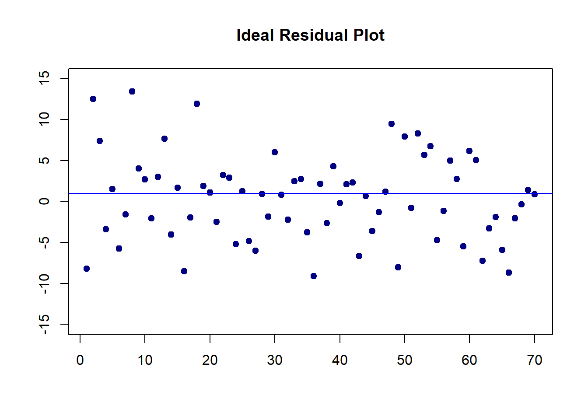

Topic 6 Bootstrapping SLR
In this note, we introduce how to use the bootstrap method to make inferences about the regression coefficients. Parametric inference of the regression models heavily depends on the assumptions of the underlying model. If there are violations of the model assumptions the resulting p-values produced in the outputs of software programs could be valid. In this case, if the sample size is large enough, we can use the Bootstrap method to make the inferences without imposing the distributional assumption of the response variable (hence the residuals).
6.1 Data Set and Practical Questions
The data set we use in this note is taken from the well-known Kaggle, a web-based online community of data scientists and machine learning practitioners, that allows users to find and publish data sets, explore and build models in a web-based data-science environment, work with other data scientists and machine learning engineers, and enter competitions to solve data science challenges ( Wikipedia).
6.1.1 Data Description
The data in this note was found from Kaggle. I renamed the original variables and modified the sales dates to define the sales year indicator. The modified data set was uploaded to the course web page at https://raw.githubusercontent.com/pengdsci/sta321/main/ww03/w03-Realestate.csv.
- ObsID
- TransactionYear(\(X_1\)): transaction date
- HouseAge(\(X_2\)): house age
- Distance2MRT(\(X_3\)): distance to the nearest MRT station
- NumConvenStores(\(X_4\)): number of convenience stores
- Latitude(\(X_5\)): latitude
- Longitude(\(X_6\)): longitude
- PriceUnitArea(\(Y\)): house price of unit area
6.1.2 Practical Question
The primary practical question is to see how the variables in the data set or derived variables from the data set affect the price of the unit area. Since we focus on the simple linear regression model in this module. We will pick one of the variables to perform the simple linear regression model.
6.1.3 Exploratory Data Analysis
We first explore the pairwise association between the variables in the data set. Since longitude and latitude are included in the data set, we first make a map to see if we can define a variable according to the sales based on the geographic regions.
To start, we load the data to R.
library(knitr)
library(scales)
houseURL = "https://raw.githubusercontent.com/pengdsci/sta321/main/ww03/w03-Realestate.csv"
realestate <- read.csv(houseURL, header = TRUE)
realestate <- realestate[, -1]
# longitude and latitude will be used to make a map in the upcoming analysis.
lon <- realestate$Longitude
lat <- realestate$Latitude Next, we make a scatter plot of longitude and latitude to see the potential to create a geographic variable. The source does not mention the geographical locations where this data was collected. In the upcoming analysis, we will draw maps and will see the site of the houses sold.
We can see that there are clusters in the plot. We can use this information to define a cluster variable to capture the potential differences between the geographic clusters in terms of the sale prices.
We now make a simple pairwise plot to show the association between variables and pick one as an example for the simple linear regression model.
The above pair-wise plot shows that some of the pair-wise associations are stronger than others. We will revisit this data set and use a multiple linear regression model to see which set of variables has a statistically significant impact on the sale prices.
In this module, We choose the distance to the nearest MRT station and the explanatory variable in the analysis.
6.2 Simple Linear Regression: Review
In this section, I list the basis of the simple linear regression model. I will use some mathematical equations to explain some key points. You can find the basic commands to create mathematical equations in the R Markdown on the following web page: https://rpruim.github.io/s341/S19/from-class/MathinRmd.html.
6.2.1 Structure and Assumptions of Simple Linear Regression Model
Let \(Y\) be the response variable (in our case, Y = Price of unit area and is assumed to be random) and X be the explanatory variable (in our case, X = distance to the nearest MRT station, X is assumed to be non-random). The mathematics expression of a typical simple linear regression is given by
\[ y = \beta_0 + \beta_1 x + \epsilon \]
6.2.1.1 Assumptions
The basic assumptions of a linear regression model are listed below
The responsible variable (\(y\)) and the explanatory variable (\(x\)) have a linear trend,
The residual \(\epsilon \sim N(0, \sigma^2)\). Equivalently, \(y \sim N(\beta_0 + \beta_1 x)\).
6.2.1.2 Interpretation of Regression Coefficients
The simple linear regression model has three unknown parameters: intercept parameters (\(\beta_0\)), slope parameter (\(\beta_1\)), and the variance of the response variable (\(\sigma^2\)). The key parameter of interest is the slope parameter since it captures the information on whether the response variable and the explanatory variable are (linearly) associated.
If \(y\) and \(x\) are not linearly associated, that is, \(\beta_1 = 0\), then \(\beta_0\) is the mean of \(y\).
If \(\beta_1 > 0\), then \(y\) and \(x\) are positively linearly correlated. Furthermore, \(\beta_1\) is the increment of the response when the explanatory variable increases by one unit.
We can similarly interpret \(\beta_1\) when it is negative.
6.2.1.3 Potential Violations to Model Assumptions
There are potential violations of model assumptions. These violations are usually reflected in the residual plot in data analysis. You can find different residual plots representing different violations from any linear regression model. The residual plot that has no model violation should be similar to the following figure.
# I arbitrarily choose n = 70, mu =0 and constant variance 25
residual<- rnorm(70, 0, 5)
plot(1:70, residual, pch = 19, col = "navy",
xlab = "", ylab = "",
ylim=c(-15, 15),
main = "Ideal Residual Plot")
abline(h=1, col= "blue")
6.2.1.4 Estimation of Parameters
Two methods: least square estimation (LSE) and maximum likelihood estimation (MLE) yield the estimate. LSE does not use the distributional information of the response variable. The MLE uses the assumption of the normal distribution of the response variable.
When making inferences on the regression coefficients, we need to use the assumption that the response variable is normally distributed.
6.3 Fitting SLR to Data
We use both parametric and bootstrap regression models to assess the association between the sale price and the distance to the nearest MRT station. As usual, we make a scatter plot
distance <- realestate$Distance2MRT
price <- realestate$PriceUnitArea
plot(distance, price, pch = 21, col ="navy",
main = "Relationship between Distance and Price")The above scatter plot indicates a negative linear association between the house price and distance to the nearest MRT station.
6.3.1 Parametric SLR
We use the built-in lm() to fit the SLR model.
distance <- realestate$Distance2MRT
price <- realestate$PriceUnitArea
parametric.model <- lm(price ~ distance)
par(mfrow = c(2,2))
plot(parametric.model)6.3.1.1 Residual Plots
We can see from the residual plots that
The top-left residual plot has three clusters indicating that some group variable is missing.
The bottom-left plot also reveals the same pattern.
The top-right plot reals the violation of the normality assumption.
The bottom-right plot indicates that there are no serious outliers,
In addition, the top-left residual plot also has a non-linear trend. We will not do the variable transformation to fix the problem,
6.3.1.2 Inferential Statistics
The inferential statistics based on the above model are summarized in the following table.
reg.table <- coef(summary(parametric.model))
kable(reg.table, caption = "Inferential statistics for the parametric linear
regression model: house sale price and distance to the nearest MRT station")| Estimate | Std. Error | t value | Pr(>|t|) | |
|---|---|---|---|---|
| (Intercept) | 45.8514271 | 0.6526105 | 70.25849 | 0 |
| distance | -0.0072621 | 0.0003925 | -18.49971 | 0 |
We will not discuss the p-value since the residual plots indicate potential violations of the model assumption. In other words, the p-value may be wrong. We will wait for the bootstrap regression in the next sub-section.
A descriptive interpretation of the slope parameter is that, as the distance increases by \(1000\) feet, the corresponding price of unit area decreases by roughly \(\$7.3\).
6.3.2 Bootstrap Regression
There are two different non-parametric bootstrap methods for bootstrap regression modeling. We use the intuitive approach: sampling cases method.
6.3.2.1 Bootstrapping Cases
The idea is to take a bootstrap sample of the observation ID and then use the observation ID to take the corresponding records to form a bootstrap sample.
vec.id <- 1:length(price) # vector of observation ID
boot.id <- sample(vec.id, length(price), replace = TRUE) # bootstrap obs ID.
boot.price <- price[boot.id] # bootstrap price
boot.distance <- distance[boot.id] # corresponding bootstrap distanceWith bootstrap price and bootstrap distance, we fit a bootstrap linear regression.
6.3.2.2 Bootstrap Regression
If we repeat the bootstrap sampling and regression modeling many times, we will have many bootstrap regression coefficients. These bootstrap coefficients can be used to construct the bootstrap confidence interval of the regression coefficient. Since the sample size is 414. The bootstrap regression method will produce a robust confidence interval of the slope of the distance. If 0 is not in the confidence interval, then the slope is significant.
The following steps construct bootstrap confidence intervals of regression coefficients.
B <- 1000 # number of bootstrap replicates
# define empty vectors to store bootstrap regression coefficients
boot.beta0 <- NULL
boot.beta1 <- NULL
## bootstrap regression models using for-loop
vec.id <- 1:length(price) # vector of observation ID
for(i in 1:B){
boot.id <- sample(vec.id, length(price), replace = TRUE) # bootstrap obs ID.
boot.price <- price[boot.id] # bootstrap price
boot.distance <- distance[boot.id] # corresponding bootstrap distance
## regression
boot.reg <-lm(price[boot.id] ~ distance[boot.id])
boot.beta0[i] <- coef(boot.reg)[1] # bootstrap intercept
boot.beta1[i] <- coef(boot.reg)[2] # bootstrap slope
}
## 95% bootstrap confidence intervals
boot.beta0.ci <- quantile(boot.beta0, c(0.025, 0.975), type = 2)
boot.beta1.ci <- quantile(boot.beta1, c(0.025, 0.975), type = 2)
boot.coef <- data.frame(rbind(boot.beta0.ci, boot.beta1.ci))
names(boot.coef) <- c("2.5%", "97.5%")
kable(boot.coef, caption="Bootstrap confidence intervals of regression coefficients.")| 2.5% | 97.5% | |
|---|---|---|
| boot.beta0.ci | 44.546009 | 47.2602114 |
| boot.beta1.ci | -0.008086 | -0.0066767 |
The 95% bootstrap confidence interval of the slope is \((-0.0079753,-0.0065808)\). Since both limits are negative, the price of the unit area and the distance to the nearest MRT station are negatively associated. Note that zero is NOT in the confidence interval. Both parametric and bootstrap regression models indicate that the slope coefficient is significantly different from zero. This means the sale price and the distance to the nearest MRT station are statistically correlated.
6.3.3 Concluding Remarks
Here are several remarks about the parametric and bootstrap regression models.
If there are serious violations to the model assumptions and the sample size is not too small, bootstrap confidence intervals of regression coefficients are more reliable than the parametric p-values since the bootstrap method is non-parametric inference.
If the form of the regression function is misspecified, the bootstrap confidence intervals are valid based on the misspecified form of the relationship between the response and the explanatory variable. However, the p-values could be wrong if the residual is not normally distributed.
If the sample size is significantly large, both Bootstrap and the parametric methods yield the same results.
If the sample size is too small, the bootstrap confidence interval could still be correct (depending on whether the sample empirical distribution is close to the true joint distribution of variables in the data set). The parametric regression is very sensitive to the normal assumption of the residual!
General Recommendations
If there is no violation of the model assumption, always use the parametric regression. The residual plots reveal potential violations of the model assumption.
If there are potential violations to the model assumptions and the violations cannot be fixed by remedy methods such as variable transformation, the bootstrap method is more reliable.
if the same size is significantly large, bootstrap and parametric methods yield similar results.
6.3.4 Bootstrap Residual Method
Bootstrapping residuals is another way to generate bootstrap random samples that are supposed to have the same distribution as that \(Y\) in the original random sample. The following flow chart explains the process of how to generate bootstrap random samples.

Next, we use a simple to demonstrate the steps to generate bootstrap samples based on sampling bootstrap residuals. The data set at https://raw.githubusercontent.com/pengdsci/sta321/main/ww03/handheight.txt has three variables: sex, height, and hand span. We will this data set to assess the linear correlation between height and hand span. We first do some exploratory analysis to visualize the potential association between height and hand size.
myurl = "https://online.stat.psu.edu/stat501/sites/stat501/files/data/handheight.txt"
handheight = read.table(myurl, header = TRUE)
MID = which(handheight$Sex=="Male")
MaleData = handheight[MID,]
FealeData = handheight[-MID,]
plot(handheight$Height, handheight$HandSpan, pch=16, col="white",
xlab = "Hand Span",
ylab = "Height",
main = "Hand Span vs Height",
col.main = "navy",
cex.main = 0.8,
bty="n")
points(handheight$Height[MID], handheight$HandSpan[MID], pch=16, col=alpha("darkred", 0.5))
points(handheight$Height[-MID], handheight$HandSpan[-MID], pch=19, col=alpha("blue", 0.5))6.3.4.1 Implementing Bootstrapping Residuals
The following code reflects the steps in the above flow-chart
height = handheight$Height
handspan = handheight$HandSpan
m0 = lm(height~handspan)
E = resid(m0) # Original residuals
a.hat = coef(m0)[1]
b.hat = coef(m0)[2]
##
B = 1000 # generating 1000 bootstrap samples
bt.alpha = rep(0, B)
bt.beta = bt.alpha
for(i in 1:B){
bt.e = sample(E, replace = TRUE) # bootstrap residuals
y.hat = a.hat + b.hat*handspan + bt.e # bootstrap heights
## bootstrap SLR
bt.m = lm(y.hat ~ handspan)
bt.alpha[i] = coef(bt.m)[1]
bt.beta[i] = coef(bt.m)[2]
}
alpha.CI = quantile(bt.alpha, c(0.025, 0.975))
beta.CI = quantile(bt.beta, c(0.025, 0.975))
##
per.025 = c(alpha.CI[1],beta.CI[1]) # lower CI for alpha and beta
per.975 = c(alpha.CI[2],beta.CI[2]) # upper CI for alpha and beta Next, we add the confidence limits to the output inferential table from the SLR based on the original sample.
lm.inference = as.data.frame((summary(m0))$coef)
lm.inference$per.025 = per.025
lm.inference$per.975 = per.975
kable(as.matrix(lm.inference))| Estimate | Std. Error | t value | Pr(>|t|) | per.025 | per.975 | |
|---|---|---|---|---|---|---|
| (Intercept) | 35.52504 | 2.3159512 | 15.33929 | 0 | 31.109251 | 40.057160 |
| handspan | 1.56008 | 0.1105437 | 14.11278 | 0 | 1.345092 | 1.767838 |
6.4 Data Set Selection for Project One
It is time to find a data set for project #1 focusing on the parametric and non-parametric linear regression model. As I did in this note, you will choose one of the variables in this data set to complete this weeks assignment.
6.4.1 Data Set Requirements
The basic requirements of the data set are:
The desired data set must have
the response variable must be continuous random variables.
at least two categorical explanatory variables.
at least one of the categorical variables has more than two categories.
at least two numerical explanatory variables.
at least 15 observations are required for estimating each regression coefficient. For example, if your final linear model has 11 variables (including dummy variables), you need \(12 \times 15 = 180\) observations.
6.4.2 Web Sites with Data Sets
The following sites have some data sets. You can also choose data from other sites.
10 open data sets for linear regression: https://lionbridge.ai/datasets/10-open-datasets-for-linear-regression/
UFL Larry Winners Teaching Data Sets: http://users.stat.ufl.edu/~winner/datasets.html
Kaggle site: https://www.kaggle.com/datasets?tags=13405-Linear+Regression
6.4.3 Analysis and Writing Components
6.4.3.1 Description of the Data Set
Write an essay to describe the data set. The following information is expected to be included in this description.
- How the data was collected?
- List of all variables: names and their variable types.
- What are your practical and analytic questions
- Does the data set have enough information to answer the questions
6.4.3.2 Simple Linear Regression
Make a pair-wise scatter plot of all variables in your selected data set and choose an explanatory variable that is linearly correlated to the response variable.
Make a pairwise scatter plot and comment on the relationship between the response and explanatory variables.
- If there is a non-linear pattern, can you perform a transformation of one of the variables so that the transformed variable and the other original variable have a linear pattern?
- If you have a choice to transform either the response variable or the explanatory variable, what is your choice and why?
Fit an ordinary least square regression (SLR) to capture the linear relationship between the two variables. If you transformed one of the variables to achieve the linear relationship, then use the transformed variable in the model. and then perform the model diagnostics. Comment on the residual plots and point out the violations to the model assumptions.
Using the bootstrap algorithm on the previous final linear regression model to estimate the bootstrap confidence intervals of regression coefficients (using \(95\%\) confidence level).
compare the p-values and bootstrap confidence intervals of corresponding regression coefficients of the final linear regression model, make a recommendation on which inferential result to be reported, and justify.